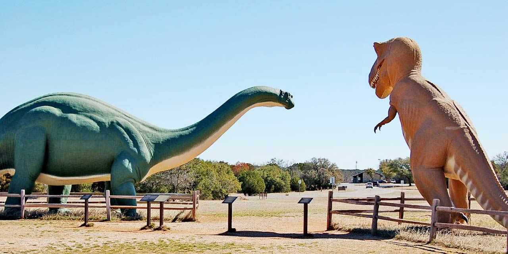

How to Get There?

By Road
Balasinor is about 90 kilometers away from Ahmedabad, Gujarat.
In 1980s Paleontologists accidently came across the fossil remains and bones in the village of Rayioli in Balasinor. Since then, the place has been flooded with researchers and a number of excavations have taken place in the area the findings of which revealed the fact that there were more than 13 species of dinosaurs that thrived around 65 million years ago. The fossil park here contains life sized statues of those giant creatures and further excavations have found that a squat, thick-legged, heavy-bodied carnivorous dinosaur with a crested horn, Rajasaurus Narmandensis, King of Narmada, (the first half of the name comes from Raja or King due to the crested horn and the second half of the name originates due to its geographical location which was near the river Narmada). This creature belonged to the carnivore family of Tyrannosaurus Rex.
A visit to the fossil park will surely make you dig deep into the history of dinosaurs in Gujarat. And in order to quench your thirst for the same, state government came up with a Dinosaur Museum. The museum is spread in an area of over 25,000 sq. feet with 10 galleries spread in the basement and the ground floor depicting various forms of displays (films and exhibitions). An exclusive 3-D film is prepared on Rajasaurus Narmadensis. Other galleries display details on Dinosaurs of India and Gujarat, Fossil Exhibits and many other features that will bring out the child in you. One can relish this museum through digital, print and static form. The state government has not only catered to those seeking information on dinosaurs and their fossils, but also a Time Machine, 3-D film, an Interactive and amusing Dino fun for kids area, a vivid display of Mesozoic times, souvenir shop etc. The museum will depict as many as 40 sculptures that will throw on a light on their size, shape, habits and habitat. The atrium features an exact replica of the habitat of these creatures. A step in the atrium will transport you 65 million years back.
